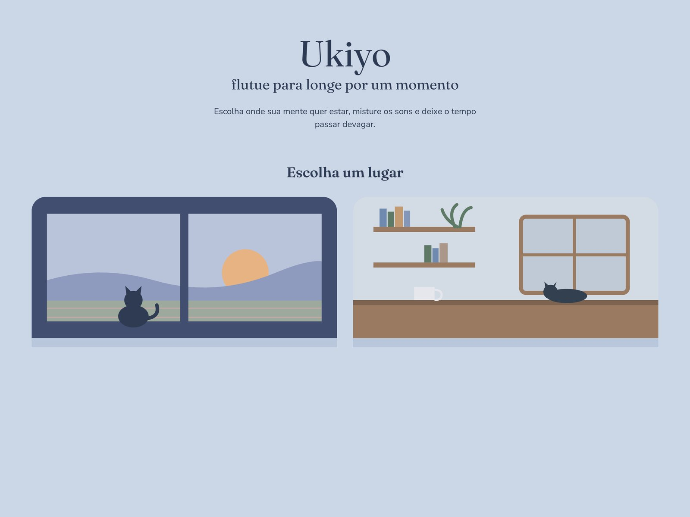

Pilar 01
Interface
Páginas responsivas e acessíveis, com atenção a tipografia, cores e cada detalhe da experiência.
- HTML
- CSS
- React
Portfólio
Estudante de Engenharia de Software
Gosto de entender o problema antes de escrever a primeira linha de código, da pesquisa com usuários ao banco de dados.

01 — Sobre
Sou estudante de Engenharia de Software no Centro Universitário UDF. Na faculdade, venho trabalhando em projetos que vão da entrevista com usuários e do protótipo de interface até a modelagem de dados e o código.
Hoje estudo Python e C, e construí este portfólio do zero com HTML, CSS e JavaScript. Estou em busca do meu primeiro estágio e aberta a oportunidades em diferentes áreas da tecnologia.
Baixar currículo (PDF)02 — O que eu faço
Pilar 01
Páginas responsivas e acessíveis, com atenção a tipografia, cores e cada detalhe da experiência.
Pilar 02
Modelagem e organização de informações, do diagrama conceitual às consultas em SQL.
Pilar 03
Lógica e interatividade com JavaScript, e a base de programação que venho construindo na faculdade.
03 — Projetos

Destaque
Em desenvolvimentoSite para guardar e organizar meus personagens, das histórias livres aos de RPG com ficha completa.
Eu crio muitos personagens, para histórias e para mesas de RPG como D&D e Ordem Paranormal, e queria um lugar só para guardar todos eles organizados.
A galeria de personagens com busca por nome e filtros por tipo e sistema de RPG, feita com componentes e estado no React.
Uma página para cada personagem dividida em capítulos, fichas de RPG de vários sistemas e login com armazenamento na nuvem.

Site pessoal construído do zero, sem frameworks, com tradução PT/EN e layout responsivo.
Eu queria um portfólio com a minha cara e que eu conseguisse explicar linha por linha, em vez de usar um modelo pronto.
Escrevi todo o código: HTML semântico, CSS com Flexbox, Grid e media queries, e JavaScript para o modal, a tradução, as animações e o botão de copiar e-mail.
A organizar um projeto com Git desde o início e a pensar em acessibilidade em cada detalhe, da navegação por teclado aos leitores de tela.

Site para estudar e relaxar em lugares reais, como um trem ou um café, com o clima e a hora de verdade.
Criar um espaço tranquilo que ajude a manter o foco nos estudos e a relaxar nas pausas.
Vídeos reais de lugares como cenário, com um gatinho ilustrado fazendo companhia. O clima pode seguir a hora e o tempo reais do lugar ou ser escolhido por você.
Conectar a API de clima, finalizar os ambientes e publicar o site.
04 — Certificados
05 — Contato
Estou em busca do meu primeiro estágio. Se você tem uma oportunidade, um projeto ou só quer trocar uma ideia, me escreva.